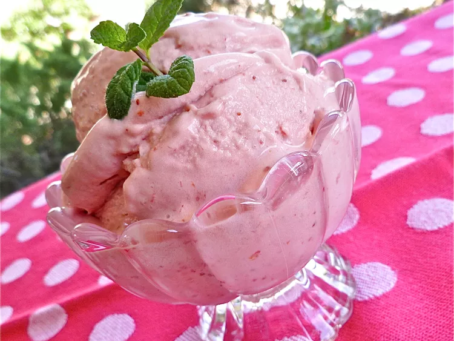

Strawberry Ice Cream

Homemade strawberry ice cream by allrecipes magazin. Recipe by Christy J.
Ingredients
- 1 quart fresh strawberries, hulled
- 1 1/2 cups heavy cream, divided
- 3/4 cups white sugar
- 3 egg yolks
- 3 tablespoons light corn syrup
Steps
- Place strawberries into the container of a blender or food processor, puree until smooth. Pour into a large bowl, set aside.
- Heat 1 1/4 cups of cream in a sauce pan over medium heat until it begins to bubble at the edge of a pan. Whisk sugar, egg yolks, remaining 1/4 cup cream and corn syrup together in a large bowl. Gradually pour the hot cream into egg yolk mixture, whisking constantly. Return mixture to the saucepan and heat until thick enough to coat the back of a metal spoon, about 5 minutes. Do not allow mixture to boil. Strain custard into berry puree through a sieve, mix well and refrigerate untill chilled.
- Fill an ice cream maker with the mixture, and freeze according to the manufracturer's instructions.